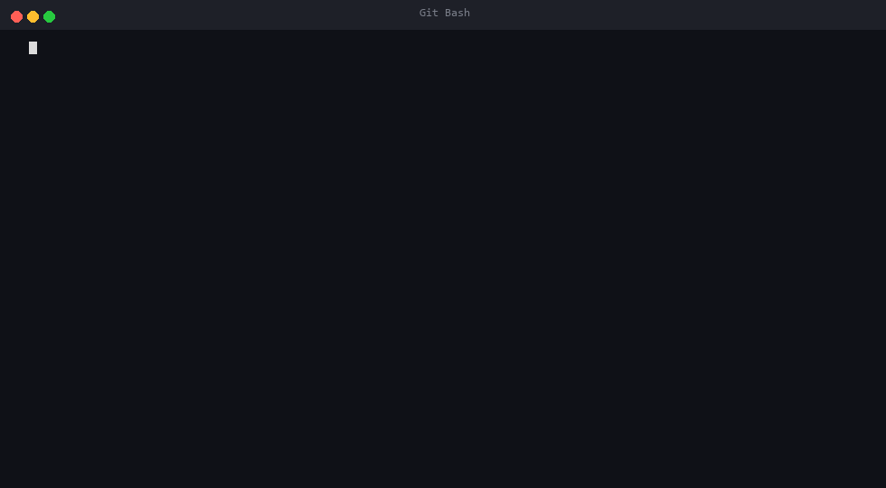

📌 學習目標
這次作業表面上是「寫 curl」,但實際上要回答的是這些問題:
看懂 HTTP 封包
HTTP request / response 真正的 byte 內容長什麼樣?每一行在做什麼?
理解網路分層
TCP socket 在哪一層?TLS 又是什麼?HTTP 為什麼要「站在」它們上面?
黑盒子 vs 白盒子
呼叫 curl 跟理解 curl 的差別,是這次作業的核心。
為什麼需要 API Key
Server 怎麼認人?Authorization header 為什麼不能亂給?
🧰 三個版本,三種視角
同一個 HTTP GET,從三個完全不同的高度看它:
curlsocket + sslTcpClient + SslStreamv2 / v3 邏輯一模一樣 — 只是換語言寫。這證明 HTTP 協定本身跟語言無關。
💡 為什麼要寫三個版本?
直接寫 fetch.sh 包 curl 不就好了嗎?
「這樣我豈不是脫褲子放屁?我根本沒有創造出我的 curl,我只是寫了個包含了 curl 的腳本?」
— 寫到一半的我自己
這個質疑是對的。fetch.sh 沒有「創造」任何東西,它只是把 curl 重新包裝。
但 理解 ≠ 重新發明。我們的目標是搞清楚 HTTP 在幹嘛,不是為了取代 curl 工程師 (他們寫了 100 萬行 C)。寫第二、第三版本不是要「取代」curl,而是要 打開黑盒子:
v1 我們只看見最上面那一層「HTTP 文字」,v2 / v3 我們實際觸碰到下面兩層 — 這就是差別。
🧬 HTTP 協定深度解析
一個 HTTP GET 到底送了什麼?Server 回什麼?每一行在做什麼?
① 一次 HTTP 請求的一生
jsonplaceholder.typicode.com → IP 位址
客戶端跟伺服器建立可靠連線
雙方協商加密方式,驗證伺服器身分
一段純文字,描述「我要什麼」
一段純文字,描述「這是你要的東西」
Connection: close)或保留給下一個請求用 (HTTP/1.1 keep-alive)
② Request:我們送出去的純文字
當你打 ./fetch_raw.py posts 1,這段 byte 序列就會被丟到網路上:

curl -v 的過程 — 真實封包一個一個冒出來GET /posts/1 HTTP/1.1\r\n
Host: jsonplaceholder.typicode.com\r\n
User-Agent: fetch_raw.py\r\n
Accept: */*\r\n
Connection: close\r\n
\r\nRequest Line:方法 路徑 版本
GET— 動詞(讀取)/posts/1— 我要拿編號 1 的 postHTTP/1.1— 協定版本
必填。一個 IP 可能掛很多網站,Host 告訴 server 要去哪一個。
告訴 server 「我是誰」。瀏覽器送 Mozilla/5.0...,我們送 fetch_raw.py。
回完就斷線,簡化本次 demo。正式專案會用 keep-alive 重用連線。
headers 跟 body 的分界。GET 沒 body,但仍要送這個空行。
③ 對應到程式碼
上面那段文字,在 fetch_raw.py 是這樣產生的:
# lib/http_client.py, get() 方法
header_lines = [
f"GET {path} HTTP/1.1",
f"Host: {self.host}",
"User-Agent: fetch_raw.py",
"Accept: */*",
"Connection: close",
]
request = ("\r\n".join(header_lines) + "\r\n\r\n").encode("utf-8")
sock.sendall(request)就是「把字串拼好 → encode 成 byte → 丟進 socket」。沒有任何神秘的 API,純字串處理。
④ Response:伺服器回給我們的純文字
Server 回的東西長這樣 (這是真實抓到的回應,稍微精簡):
HTTP/1.1 200 OK\r\n
Content-Type: application/json; charset=utf-8\r\n
Transfer-Encoding: chunked\r\n
Date: Mon, 12 Sep 2026 10:00:00 GMT\r\n
\r\n
1bf\r\n
{
"userId": 1,
"id": 1,
"title": "sunt aut facere repellat ..."
}\r\n
0\r\n
\r\nHTTP/1.1 200 OK — 版本 + 數字 + 文字描述
- 2xx = 成功
- 3xx = 重新導向
- 4xx = 你的問題 (例如 404)
- 5xx = server 的問題
server 還不知道 body 總大小時會用這個。把 body 切成好幾塊,每塊前面寫 16 進位的 size,最後一塊寫 0\r\n\r\n 表示結束。
= 447 bytes 的內容。所以下一行到 \r\n 之間,就是這塊 body。
⑤ 自己解 chunked
如果 server 用 chunked,我們要自己解開。我們的程式碼長這樣:
# lib/http_client.py
def _decode_chunked(data):
out = bytearray()
i = 0
while i < len(data):
crlf = data.find(b"\r\n", i)
size = int(data[i:crlf], 16) # 讀十六進位 size
if size == 0: break
out.extend(data[crlf + 2 : crlf + 2 + size])
i = crlf + 2 + size + 2
return bytes(out)這就是為什麼 curl 內部其實做了上千行這類解析 — 我們的版本只支援最基本的情況,但已經能跟 server 溝通。
⑥ TLS 在做什麼?(一句話帶過)
HTTP 是明文,任何中間人都看得到你打的密碼。TLS 在 TCP 之上、HTTP 之下,幫你把 HTTP 文字加密。程式裡對應的這一行:
if self.use_tls:
ctx = ssl.create_default_context()
sock = ctx.wrap_socket(sock, server_hostname=self.host)就是把「明文 socket」包成「加密 socket」。之後不管你丟什麼,外面看到的都是亂碼。
📁 檔案結構
hw1-curl/
├── index.html ← 你現在看的這個頁面
├── style.css
├── fetch.sh # v1: Bash + curl
├── fetch_raw.py # v2: Python + socket
├── fetch_raw.ps1 # v3: PowerShell + .NET
├── lib/
│ ├── api.sh # shell 共用函式
│ └── http_client.py # python HTTP client
└── tests/
├── test_fetch.sh # 10 個 shell 測試
├── test_fetch_raw.py # 9 個 python 測試
└── test_fetch_raw.sh # 14 個 powershell 測試🚀 快速上手
三個版本用法一模一樣:fetch 資源 [id]
v1 · fetch.sh
./fetch.sh posts # 拿所有文章
./fetch.sh posts 1 # 拿第 1 篇
./fetch.sh users # 拿所有使用者
./fetch.sh posts 9999 # 拿不存在的 ID → 404v2 · fetch_raw.py
python fetch_raw.py posts 1v3 · fetch_raw.ps1
powershell -ExecutionPolicy Bypass -File .\fetch_raw.ps1 posts 1✅ 測試
每個版本都有對應的測試,共 33 個測試案例:
一次跑全部
# 在 GitHub Actions 或本地都可以跑
./tests/test_fetch.sh # shell
python -m unittest discover -s tests -p "test_fetch_raw.py" -v # python
./tests/test_fetch_raw.sh # powershell每個測試都檢查:
- HTTP 狀態碼 (200 / 404)
- 回應 body 的關鍵欄位
- CLI 端對端執行結果
- 錯誤處理 (沒有參數、404 退出碼)
🎯 給讀這份作業的你
如果你看到這裡,想自己玩玩看,可以試這些: